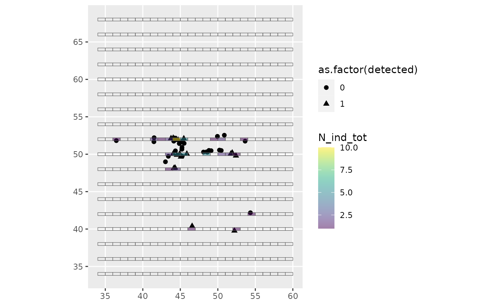

Launch a survey on a population of moving individuals
launch_survey_on_movement.RdThis function identifies the individuals detected during a standardised survey by spatial and temporal matching between segments and movement bouts of individuals. The default behaviour emulates a strip-transect survey, by considering individuals falling within a strip around the surveyed segments to be detected, but line-transect methodology can also be emulated by setting line-transect to TRUE. In this case, the actual detection of individuals is conditioned by their distance to the track line (probability of detection is computed using either half-normal of hazard rate detection functions).
Usage
launch_survey_on_movement(
survey_data_buffered,
survey_data_linear,
traj_data,
track_id_col = "ind_id",
seg_id_col = "seg_id",
line_transect = FALSE,
sigma = 0.2,
b = 1,
detection_function = "hn"
)Arguments
- survey_data_buffered
sf object, buffered segments as provided by
generate_survey_planand processed byassign_flight_plan. Matching sightings will be defined as individual movement bouts falling within the buffer around segments, so be careful about the buffer length.- survey_data_linear
sf object, non-buffered segments (LINESTRING type) as provided by
generate_survey_plan, used to compute distance to the trac line- traj_data
data.frame of individual movements, as provided by
simulate_trajectory_CPFandsimulate_trajectory_FR- track_id_col
character, the column name storing the individual id in traj_data
- seg_id_col
character, the column name storing the segment id in survey_data
- line_transect
Boolean. Should the detection process follow line-transect methodology? Default to FALSE (strip-transect setting). If TRUE, sightings are spatially matched (falling inside segment buffers) then a detection probability is calculated based on the distance to the track line.
- sigma
numeric, if line_transect is TRUE, defines the effective strip half-width used in detection functions (km)
- b
numeric, if detection_function = "hr", b value to be passed on to the detection_hr function
- detection_function
character, half-normal ("hn") or hasard rate ("hr") detection function, default to "hn"
Value
A list included an effort table (the survey_data with the number of individuals sighted per segment "N_ind_tot") and an obs_table (summarising the movement bouts detected by the survey, with their centroid coordinates). If line_transect is TRUE, obs_table includes two supplementary columns describing the probability an individual is detected based on its distance to the track line ("prob_dist") and whether it is detected or not ("detected"), while the effort table includes an additional column ("N_ind_detected") summarising the number of individuals detected based on distance to the track line.
See also
simulate_trajectory_CPF simulate_trajectory_FR
Other survey simulation functions:
assign_flight_plan(),
detection_process(),
generate_survey_plan()
Examples
# an example with a small number of individuals
survey <- suppressMessages(launch_survey_on_movement(
survey_data_buffered = example_data$flight_plan,
survey_data_linear = example_data$survey$segments,
traj_data = example_data$mvmt_data,
line_transect = TRUE, detection_function = "hn",
sigma = 0.2
))
# look at the number of sightings
summary(survey$effort_table$N_ind_tot)
#> Min. 1st Qu. Median Mean 3rd Qu. Max.
#> 0.0000 0.0000 0.0000 0.1132 0.0000 10.0000
plot(sf::st_drop_geometry(survey$obs_table[, c("dist_seg", "prob_dist")]),
xlab = "distance to the track line", ylab = "detection probability")
# all sightings are in a few segments
library(ggplot2)
ggplot(survey$effort_table) +
geom_sf(data = survey$obs_table,
aes(shape = as.factor(detected)), size = 2) +
geom_sf(aes(fill = N_ind_tot)) +
viridis::scale_fill_viridis(limits = c(1,10),
na.value = NA, alpha = 0.5)
